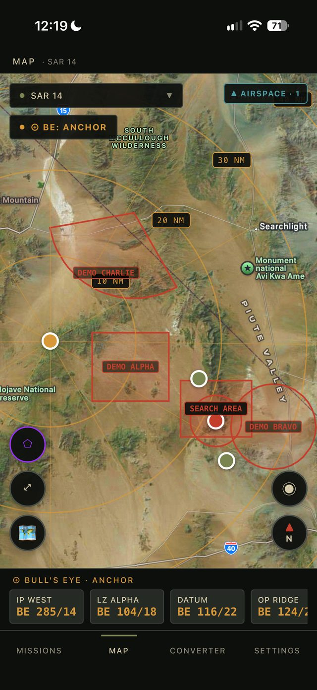
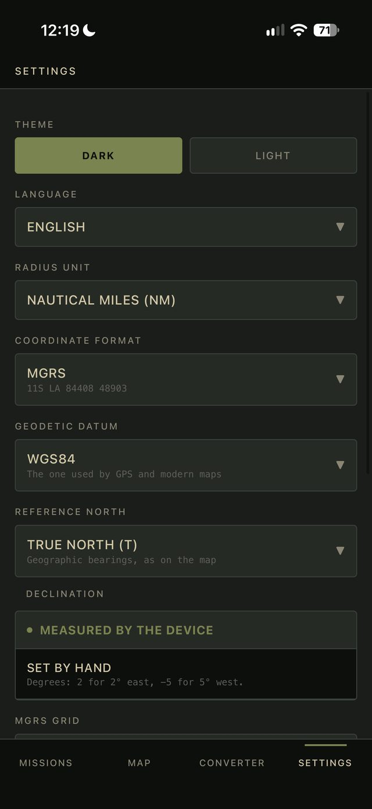
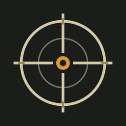
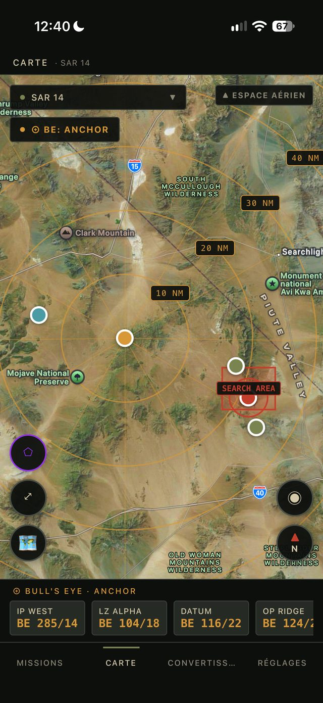
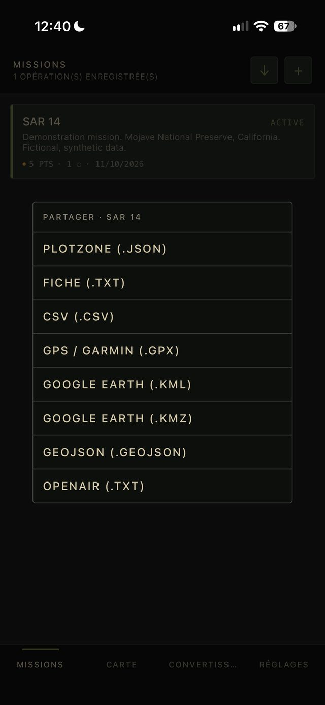
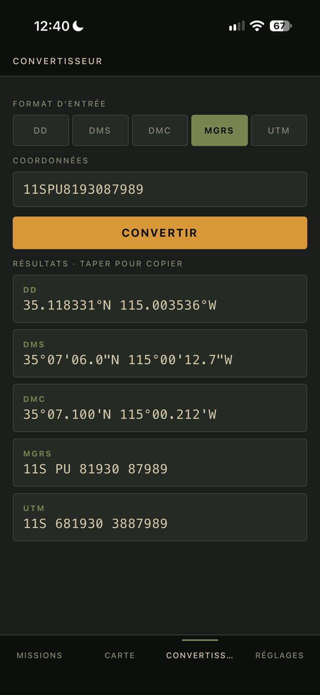
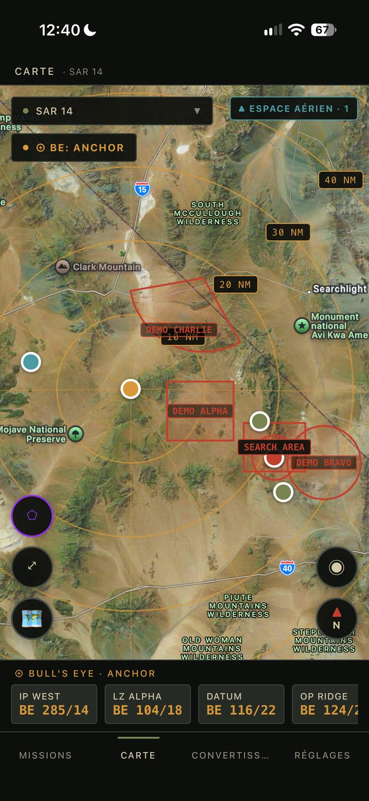
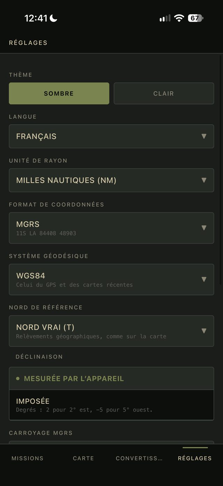

Plot. Measure. Pass it on. Nothing leaves your device.
Plot points, work out Bull’s Eye bearings, convert coordinates between five formats, draw your zones, read the MGRS and GARS grids, and load your own airspace files and offline maps, all on a satellite map, or on your own, with no account and no data collection.
Built for drone pilots, glider and free-flight pilots, search and rescue teams, surveyors and military personnel.
Download on the App Store$8.99, once. That is the price in the United States; Apple sets the matching tier elsewhere. No subscription, no in-app purchase, no account, no data collected.


Your points and zones, grouped by operation. Plot a point by typing it, by tapping the map, or from a bearing and a distance to another point. Drag it to move it, one tap undoes the move, and a mission duplicates to build a variant.
Pick one point as the reference. PlotZone then gives the bearing and distance from it to every other point of the mission, and draws rings around it every 10 NM out to 120 NM, with radials every 30°.
Decimal degrees, degrees-minutes-seconds, degrees-decimal-minutes, MGRS and UTM, converted in either direction. Touch the map to read a position, touch a result to copy it.
Type the vertices or draw the polygon with your finger, then adjust each corner. The area and the perimeter are given as you go, and a zone travels with its mission in every export format.
Load your working area from your own files, whether they hold a georeferenced chart or plain outlines. PlotZone reads KMZ, KML, OpenAir and GeoJSON, and shows several areas at once.
The MGRS grid at 1 km or 100 m, labelled the way a military map is: grid zone, 100 km square, and the principal digits of every square, read right then up. At a grid zone junction the grid switches zones with you.
Your position, tracked without pause, with its accuracy and altitude. Tap a point, or any spot on the map: the bearing and the distance from where you stand appear at the top, updated at every step, in true north or magnetic.
Import your own map in MBTiles format: its tiles are copied to the device and drawn over Apple’s map, which stays visible around them. Your sector reads with no connection at all.
Five to choose from: WGS84, NAD27 for US maps from before 1990, ED50, OSGB36 and AGD66. Coordinates are read and typed in the one you pick, so a position taken off an old chart falls where the chart says.
The GARS grid at 30’ or 15’, laid over the base map, with the designator of every cell: five characters for a 30’ box, six for a 15’ quadrant, read straight off the screen.
Two taps, on the map or on points you have plotted, give the bearing and the distance between them at the top of the screen, in nautical miles and kilometers. A third tap starts a new measurement.
Export a mission to back it up or pass it on, then import it back with nothing lost. Eight formats, from PlotZone (.json) to a text brief with the route leg by leg, plus CSV, GPX, KML, KMZ, GeoJSON and OpenAir. A file received opens straight from Mail.
Every computation runs on the device: conversions, bearings, distances, the MGRS and GARS grids, your missions, your zones and the airspace files you have loaded. None of it needs a link. The one thing that does is Apple’s satellite imagery, which will not load over a sector you have never opened. Import your own map in MBTiles format and that goes too: the tiles live on the device, and the sector reads with nothing at all.
A wrong coordinate is paid for on the ground, so the conversions are checked rather than claimed. They were measured against proj4js/mgrs 2.2.0, the most widely used MGRS library, on 160,000 randomly drawn positions, including the Norway and Svalbard grid-zone exceptions, the antimeridian, the equator and the southern band edges. Grid zones and letters matched everywhere, and reading gave three one-metre discrepancies out of the 160,000, which is arithmetic noise far from the central meridian. 353 of those reference points are frozen in the test suite, so any drift away from what another application would show fails the build. Digits are truncated, never rounded, as the NGA and FM 3-25.26 require, and a coordinate you type comes back out identical.
PlotZone is written by Cédric Provost, a flight safety officer and drone sensor operator, for the mission preparation he does himself. It is published independently, with no company and no investor behind it, which is also why it asks for nothing and sends nothing.
PlotZone does not collect, store or transmit any personal data. Your missions, the airspace files you load and the tiles of your offline maps are saved on your device alone. Your position is followed only while you ask for it, to place you on the map: it is never transmitted or shared. No account, no tracker, no analytics, no advertising.
English, French, Spanish, German, Italian, Dutch, Portuguese and Chinese. Every control is named for VoiceOver, symbols included, and the text follows the size you set in iOS. The screen is dark by default, for night work, and light on demand.
Coordinate conversions and distance calculations are provided for guidance only. Always verify your data against an official source before any critical use. PlotZone is not a certified navigation instrument.
Reportez. Mesurez. Transmettez. Rien ne quitte votre appareil.
Reportez des points, calculez des relèvements en Bull’s Eye, convertissez des coordonnées entre cinq formats, tracez vos zones, lisez les carroyages MGRS et GARS, chargez vos propres espaces aériens et vos cartes hors ligne, le tout sur une carte satellite, ou sur la vôtre, sans compte et sans collecte de données.
Conçue pour les pilotes de drone, les vélivoles et pilotes de vol libre, les équipes de recherche et de secours, les topographes et les personnels militaires.
Télécharger sur l’App Store9,99 €, une fois. Apple applique le palier correspondant dans les autres boutiques. Sans abonnement, sans achat intégré, sans compte, sans collecte de données.





Vos points et vos zones, regroupés par opération. Posez un point au clavier, au doigt sur la carte, ou depuis un relèvement et une distance à un autre point. Déplacez-le au doigt, un toucher annule, et une mission se duplique en variante.
Désignez un point comme référence. PlotZone donne alors le relèvement et la distance qui séparent chaque autre point de celui-là, et trace autour de lui des anneaux tous les 10 NM jusqu’à 120 NM, avec des radiales tous les 30°.
Degrés décimaux, degrés-minutes-secondes, degrés-minutes décimales, MGRS et UTM, convertis dans les deux sens. Touchez la carte pour lire une position, touchez un résultat pour le copier.
Saisissez les sommets au clavier ou tracez le polygone au doigt, puis ajustez chaque sommet. La surface et le périmètre s’affichent pendant le tracé, et une zone suit sa mission dans tous les formats d’export.
Chargez votre zone de travail depuis vos propres fichiers, qu’ils portent une carte géoréférencée ou de simples contours. PlotZone lit le KMZ, le KML, l’OpenAir et le GeoJSON, et affiche plusieurs espaces à la fois.
Le carroyage MGRS au kilomètre ou à l’hectomètre, étiqueté comme une carte d’état-major : zone de grille, carré de 100 km et chiffres principaux de chaque case. À une jonction de fuseaux, il change de fuseau avec vous.
Votre position suivie en continu, avec sa précision et son altitude. Touchez un point, ou un lieu quelconque : le relèvement et la distance depuis votre position s’affichent en haut, réactualisés à chaque pas, en nord vrai ou magnétique.
Importez votre propre carte au format MBTiles : ses tuiles sont copiées sur l’appareil et dessinées par-dessus celle d’Apple, qui reste visible autour. Votre secteur se lit sans aucune connexion.
Cinq au choix : WGS84, NAD27 pour les cartes américaines d’avant 1990, ED50, OSGB36 et AGD66. Toute coordonnée se lit et se saisit dans celui que vous retenez, pour qu’un report pris sur une vieille carte tombe où elle le dit.
Le carroyage GARS en 30’ ou 15’, superposé au fond de carte, avec le désignateur de chaque cellule : cinq caractères pour une case de 30’, six pour un quadrant de 15’, lus directement à l’écran.
Deux appuis, sur la carte ou sur des points posés, donnent le relèvement et la distance qui les sépare en haut de l’écran, en milles nautiques et en kilomètres. Un troisième appui repart pour une nouvelle mesure.
Exportez une mission pour la sauvegarder ou la transmettre, puis réimportez-la sans rien perdre. Huit formats, du PlotZone (.json) à la fiche texte avec l’itinéraire branche par branche, plus le CSV, le GPX, le KML, le KMZ, le GeoJSON et l’OpenAir.
Tous les calculs se font sur l’appareil : conversions, relèvements, distances, carroyages MGRS et GARS, vos missions, vos zones et les espaces aériens que vous avez chargés. Rien de tout cela ne demande de réseau. La seule chose qui en demande est l’imagerie satellite d’Apple, qui ne s’affichera pas sur un secteur que vous n’avez jamais ouvert. Importez votre propre carte au format MBTiles et cette dépendance disparaît aussi : les tuiles sont sur l’appareil, et le secteur se lit sans rien.
Une coordonnée fausse se paie sur le terrain : les conversions sont donc vérifiées, et pas seulement affirmées. Elles ont été confrontées à proj4js/mgrs 2.2.0, la bibliothèque MGRS la plus répandue, sur 160 000 positions tirées au hasard, exceptions de fuseau de la Norvège et du Svalbard, antiméridien, équateur et bords de bandes australes compris. Les zones et les lettres concordaient partout, et la lecture donnait trois écarts d’un mètre sur les 160 000, bruit de calcul loin du méridien central. 353 de ces points de référence sont figés dans la série de tests : tout écart avec ce qu’afficherait une autre application fait échouer la construction. Les chiffres sont tronqués et jamais arrondis, comme l’exigent la NGA et le FM 3-25.26, et une coordonnée que vous saisissez se réaffiche à l’identique.
PlotZone est écrite par Cédric Provost, officier sécurité des vols et opérateur capteur de drone, pour la préparation de mission qu’il fait lui-même. Elle est publiée en indépendant, sans société ni investisseur derrière elle, ce qui est aussi la raison pour laquelle elle ne demande rien et n’envoie rien.
PlotZone ne collecte, ne stocke et ne transmet aucune donnée personnelle. Vos missions, les fichiers d’espace aérien que vous chargez et les tuiles de vos cartes hors ligne sont enregistrés uniquement sur votre appareil. Votre position n’est suivie que tant que vous le demandez, pour vous afficher sur la carte : elle n’est jamais transmise ni partagée. Aucun compte, aucun traceur, aucun outil d’analyse, aucune publicité.
Français, anglais, espagnol, allemand, italien, néerlandais, portugais et chinois. Toutes les commandes sont nommées pour VoiceOver, symboles compris, et le texte suit la taille réglée dans iOS. L’écran est sombre par défaut, pour le travail de nuit, et clair à la demande.
Les conversions de coordonnées et les calculs de distance sont fournis à titre indicatif. Vérifiez toujours vos données auprès d’une source officielle avant tout usage critique. PlotZone n’est pas un instrument de navigation certifié.